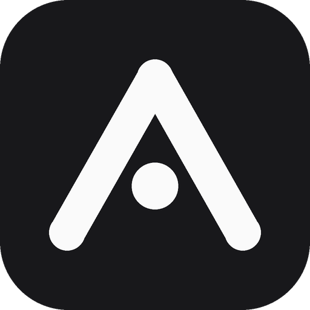
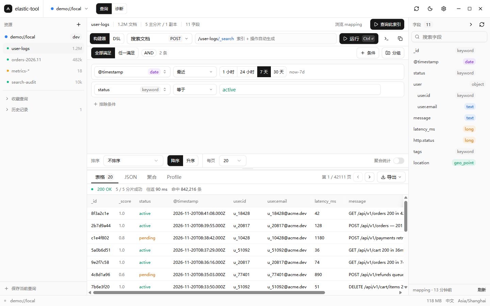
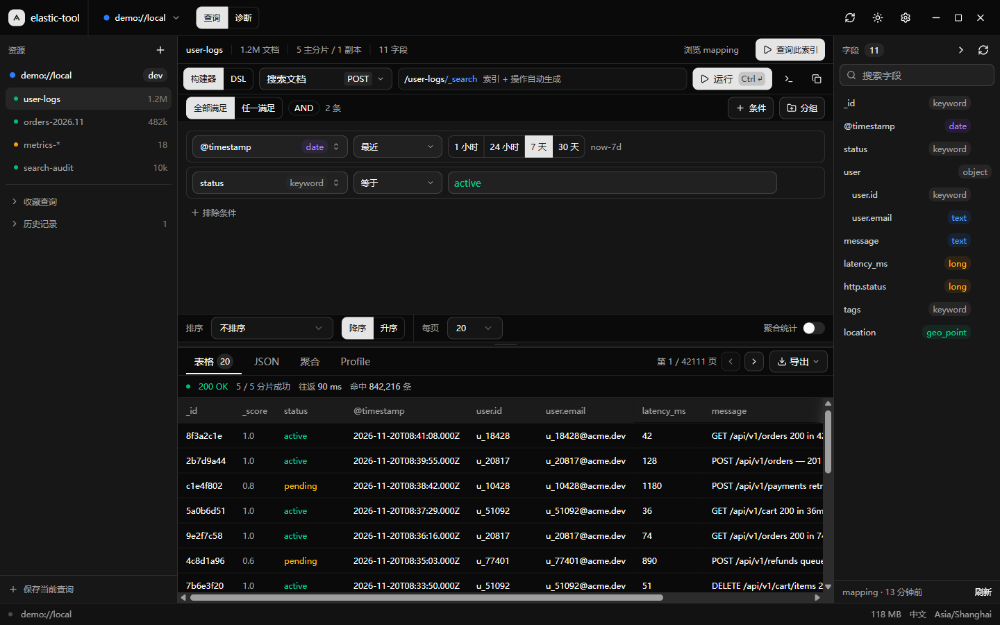

Elasticsearch 桌面客户端。索引驱动的查询构建器、DSL 编辑器、结果表格与分页、集群诊断，浅色与深色主题随时切换。


Dev Tools 需要记字段和 DSL 语法，curl 又看不到结果表格与集群状态。这个客户端把两件事合在一起。
字段来自 mapping，操作符和值控件随类型变化，实时编译成 DSL 并校验。
默认 20 条一页，可切 20 / 50 / 100，上一页下一页自动重跑，改条件回到第一页。
一键复制与真实请求一致的 curl 命令，含认证方式与自签证书参数。
分片、线程池、磁盘水位、节点状态集中展示，支持自动刷新与 hot threads。
不做多标签页，切换索引按「连接 + 索引」保留各自草稿，切回来接着改。
请求由主进程发出，密码用系统钥匙串加密，配置文件不落明文。
Node.js 20+ 与 pnpm 10+，首次启动自带 demo://local 演示连接。
git clone https://github.com/nickiilord/elastic-tool.git
cd elastic-tool
pnpm install
pnpm devpnpm dist 会把安装包输出到 dist/。
| 平台 | 产物 |
|---|---|
| Windows | elastic-tool Setup <version>.exe（NSIS x64） |
| macOS | elastic-tool-<version>.dmg（未签名） |
| Linux | elastic-tool-<version>.AppImage |
只想要免安装目录：pnpm build && pnpm exec electron-builder --dir。
Ctrl K | 命令面板 |
Ctrl Enter | 运行当前查询 |
Ctrl N | 新建连接 |
Ctrl S | 保存当前查询 |
F5 | 刷新索引、mapping 与诊断 |
组件全部由 shadcn/ui 提供，主题是官方 neutral 变量，浅色 / 深色 / 跟随系统三档，切换带扩散过渡。 深色模式的语法高亮、表格、弹层都跟随主题，`prefers-reduced-motion` 下动画自动关闭。